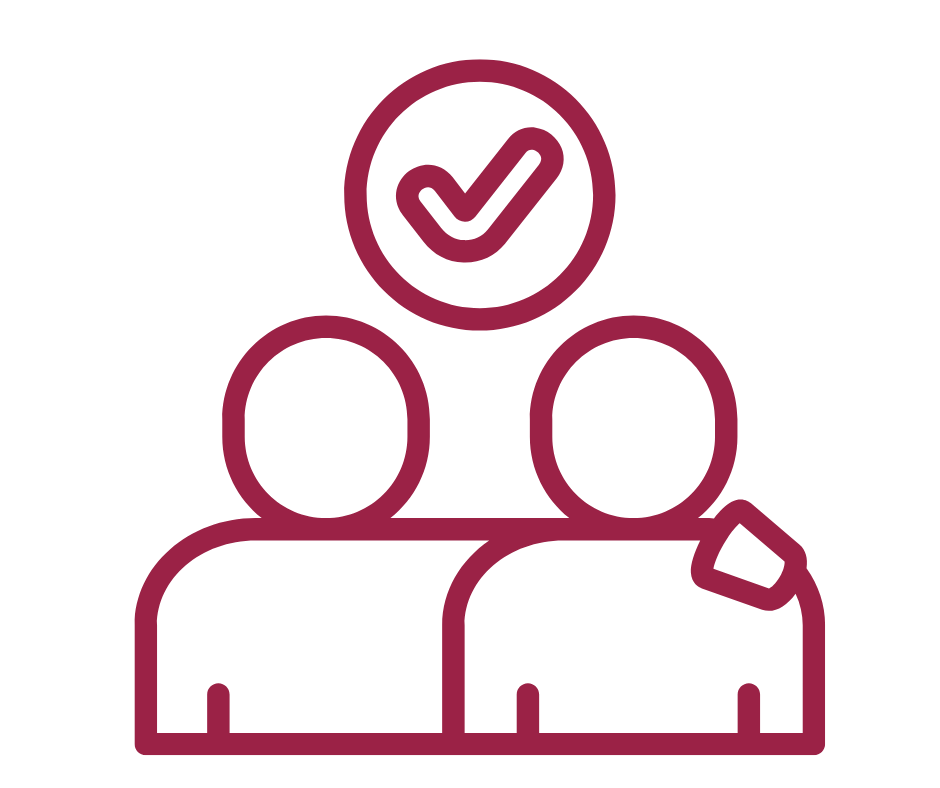
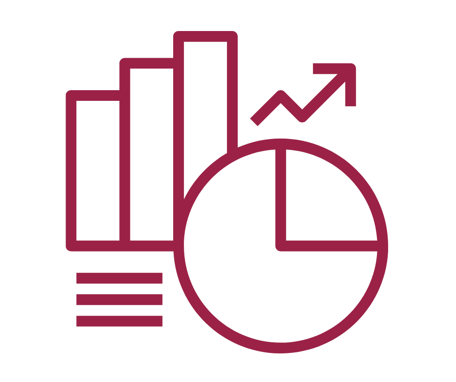

.png)
Introducción/Antecedentes
La desafiliación escolar es el proceso de distanciamiento de las y los estudiantes que desemboca en el abandono de sus estudios como evento límite por atender; prevenir que ocurra impactará de manera positiva en la continuidad de la trayectoria escolar. En ese sentido, las categorías de abandono escolar y retorno permitirán a la SEMS analizar cuantitativamente de manera periódica la desincentivación de la desafiliación escolar.
La realidad del abandono escolar
Durante el ciclo escolar 2023-2024, el nivel medio superior
presentó la tasa de
abandono más alta de todos los niveles educativos.
Nivel Medio Superior
Tasa más alta
Nivel Superior
Universidad
Secundaria
Educación básica
Primaria
Tasa más baja
Compromiso con la educación
como derecho humano
En el marco de la educación como derecho humano, el Sistema
Nacional del Bachillerato de la Nueva Escuela Mexicana asume
el
compromiso de prevenir la desafiliación escolar, impulsar
el retorno
de estudiantes y implementar la campaña "Te
extrañamos en el salón".
Objetivo General
La campaña “Te extrañamos en el salón” es una iniciativa integral de la SEMS-SEP diseñada para prevenir la desafiliación escolar y de impulsar el retorno de estudiantes que han interrumpido sus estudios de nivel medio superior durante el inicio del ciclo escolar a través de estrategias personalizadas de seguimiento y acompañamiento estudiantil.
Objetivos particulares
Cuantificar la desafiliación durante las primeras semanas del ciclo escolar
Promover y cuantificar el retorno a clases de estudiantes que se ausentaron
Generar reflexión y diálogo en la comunidad escolar sobre la permanencia
Periodicidad y Duración
Cronograma estratégico para maximizar el impacto de la campaña
Una vez por semestre
Intensivo
3 semanas posteriores
Acciones de la Campaña
Estrategias integrales para identificar, contactar y facilitar el retorno de
estudiantes al aula
Contabilizar e Identificar
Registro y análisis de estudiantes ausentesRegistrar estudiantes inscritos no presentados
Identificar mediante análisis de registros
Reportes de inasistencia
Análisis primeras semanas
Llamadas y Visitas
Contacto directo con estudiantes y familiasContactar por teléfono
Visitas domiciliarias
Conocer motivos de abandono
Invitar al retorno
Diagnósticos de Abandono
Evaluación de factores de riesgoRegistrar factores de abandono
Evaluar causas principales
Ofrecer alternativas
Facilidades personalizadas

Facilidades de Retorno
Apoyo integral para la reincorporaciónFlexibilizar fechas de trámites
Acompañamiento académico
Apoyo socioemocional
Gestión de becas
Espacios de Reflexión
Actividades comunitarias de sensibilizaciónActividades de integración
Fortalecimiento identitario
Diálogo y debates
Sensibilización comunitaria

Consolidación y Análisis
Procesamiento de información y mejora continuaRecepción de resultados por escuela
Consolidación de datos
Análisis de impacto
Mejoras de política educativa